Franka Research 3
협동로봇
이더넷 연결과 Desk 사용법, franka_ros(Noetic) · franka_ros2(Humble) 설치와 예제 실행, WeGo FR3 제어 UI, 버전 호환과 문제 해결까지 WeGo의 FR3 시작 자료를 한 권에 모았습니다.
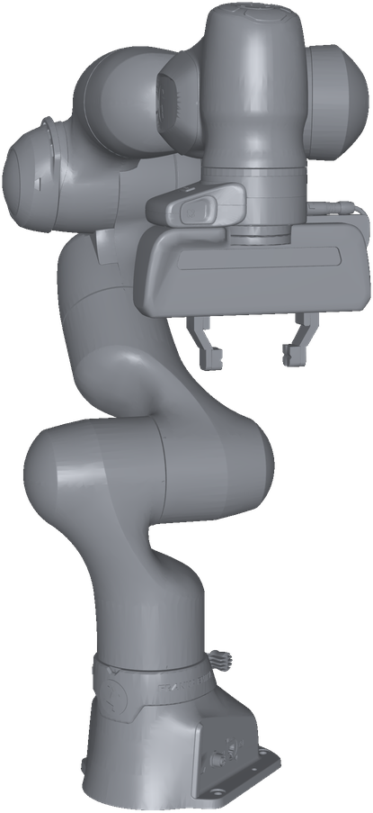
이 설명서에 대하여
| 로봇 | Franka Research 3(FR3) 7자유도 로봇팔 · 컨트롤 박스(Control) · Franka Hand |
| 근거 문서 | WeGo Franka Research 3 Start Manual (이더넷 설정 · Desk · Franka-ROS · Franka-ROS2) · WeGo Franka FR3 제어 UI 매뉴얼 v1.0 (franka_control_ui v0.1.0) · WeGo Franka Research 3 PC 제어 완전 설치 가이드 (2026-09-16, 시스템 구성 · 버전 호환 · franka_ros2 실행 · 문제 해결 · 안전 수칙 부분) · Franka 공개 문서 frankarobotics.github.io/docs · FR3 호환 표 franka.de/fr3-compatibility-matrix. 본문에서는 앞의 WeGo 자료 세 가지를 차례로 Start Manual · 제어 UI 문서 · 설치 가이드라고 부릅니다. |
| 소프트웨어 | 5장: Ubuntu 20.04 · ROS Noetic · FR3 시스템 5.3.1 · libfranka 0.10.0 · 6장: Ubuntu 22.04 · ROS 2 Humble · FR3 시스템 5.6.0 · libfranka 0.13.3 · 7장: FR3 시스템 5.10.0 · ROS 2 Humble · franka_control_ui 0.1.0 |
| 판 | 한국어판 · 2026.11.18 |
| 문의 | go.support@wego-robotics.com |
이 책은 FR3를 개발 PC에서 처음 연결해 움직이기까지의 순서를 다룹니다. 로봇 본체의 안전 · 설치 · 사양과 법적 정보는 Franka Robotics의 Product Manual Franka Research 3가 기준이며, 이 책은 그것을 대신하지 않습니다. 시스템 버전과 소프트웨어 버전에 따라 화면과 명령이 달라질 수 있습니다.
© WeGo Robotics. Franka, Franka Research 3, Desk는 Franka Robotics GmbH의 상표입니다. 표지의 FR3 이미지는 Franka Robotics가 공개한 로봇 모델 메시(github.com/frankarobotics/franka_description, Apache-2.0)를 MuJoCo로 렌더링한 것이고, 본문 그림은 WeGo가 찍은 화면과 사진이며, Desk 화면은 Franka Robotics 소프트웨어의 화면입니다.
목차
- 01시스템 구성과 버전
- 02중요 안전 수칙
- 03FR3 이더넷 설정
- 04FR3 Desk
- 05Franka-ROS (Noetic)
- 06Franka-ROS 2 (Humble)
- 07WeGo FR3 제어 UI
- 08문제 해결
- 부록빠른 참조
시스템 구성과 버전
FR3 시스템은 로봇팔 · 컨트롤 박스 · 개발 PC로 이루어집니다. 개발 PC는 웹 브라우저로 Desk에 접속해 로봇을 설정하고, FCI(Franka Control Interface)로 1 kHz 실시간 제어를 합니다.
- FCI는 외부 PC가 1 kHz 주기로 로봇 상태를 받고 명령을 보내는 실시간 채널입니다. 1 ms마다 정확히 한 번씩 패킷을 주고받습니다.
- 이 주기를 한 번이라도 놓치면 컨트롤 박스가 통신 위반으로 판단해 로봇을 바로 정지시킵니다. 일반 커널은 이 주기를 보장하지 못하므로 실시간(RT) 커널이 필요합니다.
로봇과 개발 PC 사이에 스위치 · 공유기 · Wi-Fi를 넣으면 1 kHz 주기를 놓쳐 로봇이 정지합니다. 반드시 케이블로 직접 연결하십시오.
준비물
| 구분 | 항목 | 비고 |
|---|---|---|
| 하드웨어 | Franka Research 3 + 컨트롤 박스 | 전원 케이블, 로봇–컨트롤 박스 연결 케이블 |
| 하드웨어 | External Activation Device (E-stop) | 필수입니다. 없으면 로봇이 파란색 상태가 되지 않습니다 |
| 하드웨어 | 이더넷 케이블 1개 (직결용) | 스위치 · 허브를 쓰지 않습니다 |
| 하드웨어 | Ubuntu PC (유선 랜 포트 필수) | SSD 여유 40 GB 이상 (커널 빌드용). USB-이더넷 어댑터도 동작하지만 지터가 늘어나므로 내장 랜 포트를 권장합니다 |
| 계정 | Franka 계정 (franka.de) | 시스템 이미지를 내려받을 때 필요합니다 |
| 계정 | Desk 로그인 정보 | 로봇을 처음 설정할 때 만든 관리자 계정 (4장) |
| 정보 | 로봇 시스템 버전 | Desk → Settings → System → Version. 이 버전이 libfranka 버전을 정합니다 |
| 권한 | PC의 sudo 권한 | 실시간 커널 설치에 필요합니다 |
소프트웨어 구성
| 층 | 이름 | 설명 | 필수 |
|---|---|---|---|
| 로봇 펌웨어 | System Image (예: 5.9.x) | 컨트롤 박스에 설치된 이미지. 모든 버전의 기준점 | 고정 |
| OS | Ubuntu + PREEMPT_RT | 실시간 커널. 없으면 제어 루프가 시작되지 않습니다 | 필수 |
| 저수준 C++ | libfranka | FCI 프로토콜 구현, 1 kHz 제어 루프 | 필수 |
| ROS 2 | franka_ros2 | libfranka를 ros2_control로 감싼 패키지 | 선택 |
| Python | franky | libfranka의 Python 바인딩 + Ruckig 궤적. ROS가 필요 없습니다 | 선택 |
| Python | panda-py | Python 바인딩. 티칭 · 로깅에 강합니다 | 선택 |
| 경로 계획 | MoveIt 2 | 충돌 회피 경로 계획. franka_ros2 위에서 동작 | 선택 |
용어
| 용어 | 뜻 |
|---|---|
| FCI | Franka Control Interface. 외부 PC가 1 kHz로 로봇을 제어하는 실시간 인터페이스 |
| Desk | 컨트롤 박스가 띄우는 웹 화면. 브라우저로 접속해 로봇의 잠금을 풀고 설정합니다 |
| Reflex | 로봇이 스스로 위험을 감지해 일으키는 정지. 발생 후에는 오류 복구(error recovery)가 필요합니다 |
| Guiding mode | 중력 보상 상태. 사람이 손으로 로봇을 움직일 수 있습니다 |
| Impedance | 위치 오차에 스프링처럼 반응하는 제어. 값이 낮을수록 부드럽고 외력에 잘 따릅니다 |
| Collision behavior | 이 토크 · 힘 임계값을 넘으면 reflex가 일어납니다. 안전의 1차 방어선입니다 |
| Robot / Gripper server | 컨트롤 박스 안의 프로토콜 버전. libfranka와 반드시 맞아야 합니다 |
| relative_dynamics_factor | franky의 전역 속도 · 가속도 · 저크 배율. 0.05 = 최댓값의 5% |
버전 호환 문서
libfranka 버전이 로봇의 시스템 버전과 맞지 않으면 연결 자체가 거부됩니다. 코드 문제가 아닙니다. 가장 흔한 실패입니다.
$ ./examples/echo_robot_state 172.16.0.2
libfranka: Incompatible library version.
Server version: 9, Library version: 7
- Server version은 컨트롤 박스(시스템 이미지)의 프로토콜 버전, Library version은 빌드한 libfranka의 프로토콜 버전입니다.
- 해결은 하나뿐입니다. 시스템 이미지에 맞는 libfranka 버전으로 다시 빌드하십시오 (반대로 로봇 이미지를 올려도 됩니다).
먼저 로봇의 버전을 확인하십시오. 브라우저로 Desk(https://172.16.0.2)에 로그인한 뒤 오른쪽 위 메뉴 → Settings → 왼쪽 System 탭 → Version 항목을 봅니다 (예: System Version 5.9.1 / Robot Server 10 / Gripper Server 3).
이미 libfranka를 빌드했다면 dpkg -l | grep libfranka로 설치된 버전을 볼 수 있습니다.
| System Image | libfranka | Server (robot / gripper) | franka_ros2 | Ubuntu |
|---|---|---|---|---|
| ≥ 5.9.0 | ≥ 0.18.0 | 10 / 3 | Humble ≥ 2.0.2, < 3.0.0 | 22.04 |
| ≥ 5.9.0 | ≥ 0.18.0 | 10 / 3 | Jazzy ≥ 3.0.0 | 24.04 |
| ≥ 5.7.2, < 5.9.0 | ≥ 0.15.0, < 0.18.0 | 9 / 3 | Humble ≥ 2.0.2, < 3.0.0 | 22.04 |
| ≥ 5.7.2, < 5.9.0 | ≥ 0.15.0, < 0.18.0 | 9 / 3 | Jazzy ≥ 3.0.0 | 24.04 |
| ≥ 5.7.0, < 5.7.2 | ≥ 0.14.1, < 0.15.0 | 8 / 3 | Humble ≥ 0.1.15, ≤ 2.0.0 | — |
| ≥ 5.5.0, < 5.7.0 | ≥ 0.13.3, < 0.14.1 | 7 / 3 | Humble ≥ 0.1.15, ≤ 2.0.0 | — |
| ≥ 5.2.0, < 5.5.0 | ≥ 0.10.0, < 0.13.3 | 6 / 3 | Humble ≥ 0.1.0, ≤ 0.1.8 | — |
5장은 시스템 5.3.1 + libfranka 0.10.0(Noetic), 6장은 시스템 5.6.0 + libfranka 0.13.3(Humble), 7장의 제어 UI는 시스템 5.10.0에서 시험했습니다.
로봇의 버전이 다르면 위 표에서 맞는 libfranka 버전을 골라 5 · 6장의 0.10.0 · 0.13.3 자리에 넣으십시오.
중요 안전 수칙
이 책의 근거 자료에 있는 안전 수칙과 각 장의 경고를 한곳에 모았습니다. 로봇을 움직이기 전에 읽으십시오. 로봇 본체의 안전 정보는 Franka Robotics의 제품 설명서(Product Manual)를 따르십시오.
FCI 모드에서는 Desk의 안전 프리셋(속도 · 작업 공간 제한)이 꺼지고, 안전 책임이 모두 사용자의 코드로 넘어옵니다.
FCI로 제어할 때
- E-stop을 손이 닿는 곳에 두십시오. 실행 전마다 위치를 확인하십시오.
- 작업 반경을 비우십시오. FR3의 도달 거리는 855 mm입니다. 사람 · 장비 · 케이블을 모두 치우십시오.
- 속도는 낮게 시작하십시오 (예: franky는 relative_dynamics_factor = 0.05부터).
- 충돌 임계값을 낮게 설정하십시오. 토크 20 Nm · 힘 10 N부터 시작해 필요한 만큼만 올리십시오.
- 토크 제어는 맨 마지막에 하십시오. 중력 보상이 어긋나면 로봇이 급격히 움직입니다.
- 처음 실행하는 코드는
use_fake_hardware:=true로 먼저 검증하십시오. - 좌표를 코드에 고정하기 전에 현재 끝단(EE) 좌표를 읽어 작업 영역을 파악하십시오.
- 그리퍼 homing은 손가락 사이를 비우고 하십시오. 최대로 벌렸다 닫습니다.
- 혼자 있을 때 첫 시험을 하지 마십시오.
- 비상시 순서: E-stop → 코드 종료 → Desk에서 오류 확인 → 원인 제거 → 다시 시작.
WeGo FR3 제어 UI를 쓸 때
- 제어 UI는 실제 로봇을 움직입니다. 처음 쓸 때는 외부 비상 정지(E-stop) 스위치를 손에 쥐고, 작업 반경 안에 사람과 장애물이 없는 상태에서 SPEED 10% 이하로 시작하십시오.
- UI의 STOP 버튼과 Esc 키는 소프트웨어 정지입니다. 비상 상황에서는 언제나 외부 E-stop을 누르십시오.
- 로봇을 움직이는 버튼은 실행 전에 확인 창이 뜹니다. 내용을 읽고 OK를 누르십시오. 확인 창의 기본 선택은 Cancel입니다.
각 장에서 다시 나오는 경고
- 관절 잠금을 풀 때 팔이 중력으로 살짝 처질 수 있습니다. 아래에 물건이 없는지 먼저 확인하십시오 (4장).
- libfranka 예제는 FCI를 켜고, 패키징 자세가 아닌 자세에서 실행하십시오 (6장).
- MoveIt 2에서는 처음부터 Plan & Execute를 쓰지 말고, Velocity · Acceleration Scaling을 0.1로 낮춰 시작하십시오 (6장).
- 웨이포인트 순차 재생은 경로 중간의 충돌을 검사하지 않습니다. SPEED를 낮게 두고 지켜보십시오 (7장).
- Cartesian 예제는 팔꿈치(null-space)를 제어하지 않아, 밀면 팔꿈치가 흘러갈 수 있습니다. 팔꿈치 쪽은 밀지 마십시오 (7장).
- Gravity comp는 페이로드 설정이 실제와 다르면 팔이 처지거나 떠오를 수 있습니다. 팔을 잡은 상태에서 켜십시오 (7장).
FR3 이더넷 설정
개발 PC와 컨트롤 박스를 이더넷 케이블로 연결하고, PC의 유선 IP를 로봇과 같은 대역으로 정합니다. 로봇의 기본 주소는 172.16.0.2입니다.
하드웨어 연결
컨트롤 박스와 개발 PC 사이에 이더넷 케이블을 연결합니다.
- 랜 케이블로 직접 연결합니다. 스위치 · 허브 · 공유기 · Wi-Fi는 1 kHz 주기를 지키지 못합니다.
- 케이블은 CAT5e 이상이면 충분합니다. 크로스오버 케이블은 필요 없습니다 (Auto-MDIX).
- 컨트롤 박스 전원을 켜고 부팅을 기다립니다 (약 30초 ~ 1분). 팬 소리가 안정되면 부팅이 끝난 것입니다.
설치 가이드는 컨트롤 박스 앞면 포트를 FCI용 robot network, 뒷면 포트를 Desk용 shop floor network로 설명합니다. Franka 공개 문서(Setting Up the Robot System and Network for FCI)는 FCI로 제어하는 PC를 컨트롤 박스의 LAN 포트(shop floor network)에 연결하고, 로봇팔 베이스의 포트에는 연결하지 말라고 합니다. 이 책은 Franka 문서를 따릅니다.
이더넷 설정
- 유선 연결 프로필을 추가합니다.Ubuntu의 Settings → Network → Wired에서 오른쪽 위의 + 버튼을 누릅니다.
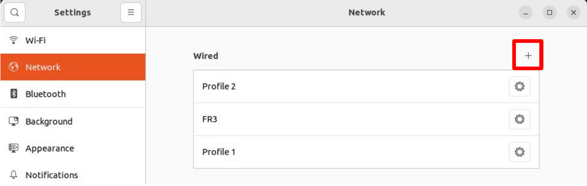
그림 2. Settings → Network → Wired의 + 버튼 - IPv4를 수동으로 정합니다.IPv4 탭에서 Method를 Manual로 바꾸고, Address
172.16.0.10, Netmask255.255.255.0을 넣습니다. Gateway와 DNS는 비워 둡니다.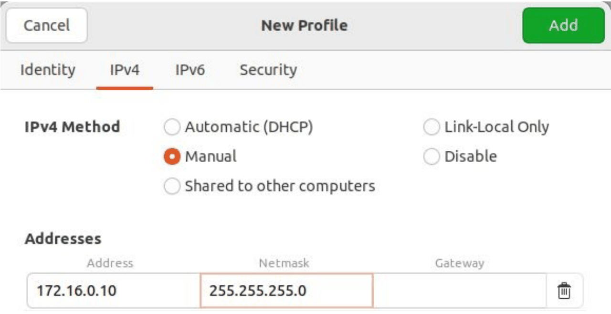
그림 3. IPv4 Method: Manual, 172.16.0.10 / 255.255.255.0 - Add를 누릅니다.설정이 바로 반영되지 않으면 Wired 토글을 껐다가 다시 켭니다.
Start Manual과 제어 UI 문서는 개발 PC에 172.16.0.10/24를, 설치 가이드와 Franka 문서는 172.16.0.1/24를 씁니다.
둘 다 로봇(172.16.0.2)과 같은 대역입니다. 이 책은 172.16.0.10을 씁니다.
연결 테스트
터미널에서 로봇에 ping을 보냅니다.
ping 172.16.0.2
연결에 실패하면 아래처럼 Destination Host Unreachable이 나옵니다.
PING 172.16.0.2 (172.16.0.2) 56(84) bytes of data. From 172.16.0.10 icmp_seq=3 Destination Host Unreachable From 172.16.0.10 icmp_seq=4 Destination Host Unreachable From 172.16.0.10 icmp_seq=5 Destination Host Unreachable
연결에 성공하면 로봇이 응답합니다.
PING 172.16.0.2 (172.16.0.2) 56(84) bytes of data. 64 bytes from 172.16.0.2: icmp_seq=1 ttl=64 time=0.208 ms 64 bytes from 172.16.0.2: icmp_seq=2 ttl=64 time=0.230 ms 64 bytes from 172.16.0.2: icmp_seq=3 ttl=64 time=0.241 ms
응답이 없으면 다음을 확인하십시오.
- 컨트롤 박스의 부팅이 끝났는지 확인합니다.
ip addr로 개발 PC에 172.16.0.10이 실제로 잡혔는지 확인합니다.- 방화벽을 확인합니다.
sudo ufw status가 활성이면sudo ufw allow from 172.16.0.0/24를 실행합니다.
ping이 안 되면 Desk 접속도 안 됩니다. 여기서 해결하고 다음 장으로 넘어가십시오.
FR3 Desk
Desk는 컨트롤 박스가 띄우는 웹 화면입니다. 웹 브라우저로 접속해 로봇의 상태를 보고, 잠금을 풀고, 앱을 이어 붙여 작업을 프로그래밍합니다.
Desk 접속
- 웹 브라우저 주소 창에
172.16.0.2를 입력합니다.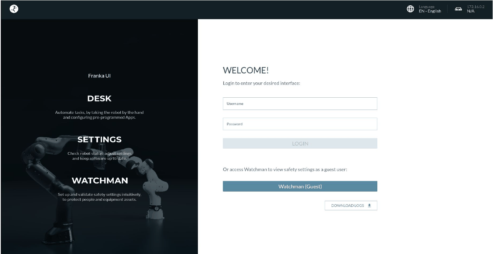
그림 4. Desk 로그인 화면 - 인증서 경고를 넘깁니다.첫 접속 때 오류 페이지가 나오면 고급 → 172.16.0.2(으)로 이동을 누릅니다. 로봇이 자체 서명 인증서를 쓰기 때문입니다.
- 로그인합니다.로봇을 처음 설정할 때 만든 관리자 계정으로 로그인합니다. 처음 접속하는 로봇이면 관리자 계정을 만드는 화면이 나옵니다.
계정을 만들고 비밀번호를 기록해 두십시오. 비밀번호를 잃어버리면 복구가 번거롭습니다.
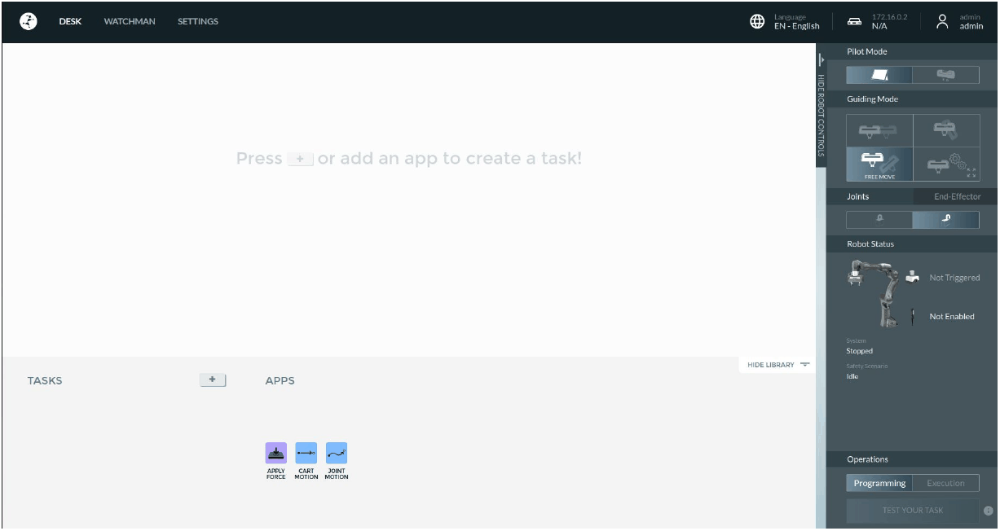
그림 5. 로그인 후 Desk 화면
Desk 메인 화면
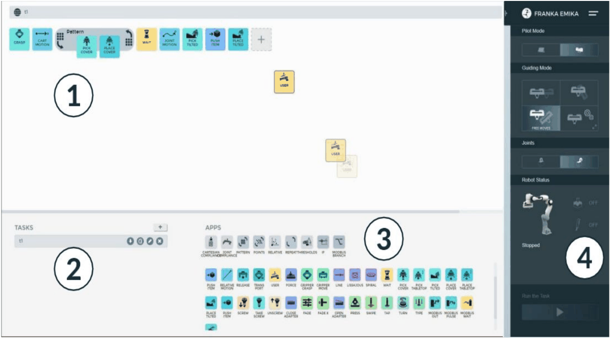
| 번호 | 영역 | 역할 |
|---|---|---|
| 1 | Time-Line | 작업을 프로그래밍하기 위해 앱을 순서대로 늘어놓는 영역 |
| 2 | Task | 프로그래밍한 작업을 저장하거나, 이미 만든 작업을 눌러 실행 |
| 3 | Apps | 프로그래밍에 쓸 수 있는 설치된 앱 모음. Time-Line으로 끌어다 놓아 단계를 구성합니다. 기본 앱은 세 가지뿐이며, 앱이 더 필요하면 Franka World에서 살 수 있습니다 |
| 4 | Side bar | 로봇의 현재 모드, 외부 활성화 장치의 켜짐 · 꺼짐, 오류 여부 같은 상태 알림을 봅니다 |
LED와 로봇 상태 색
로봇팔의 LED와 Desk의 로봇 상태는 같은 색으로 상태를 알립니다.
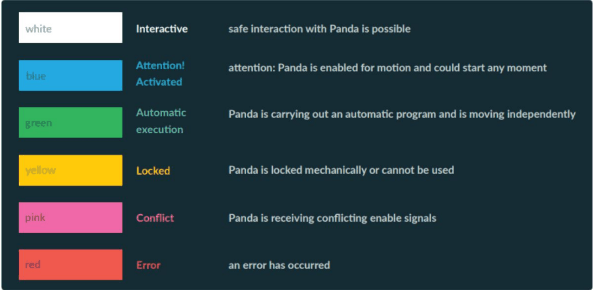
| 색 | 뜻 |
|---|---|
| 흰색 | FR3와 안전하게 상호 작용할 수 있음 (Interactive) |
| 파란색 | FR3가 동작 중이거나 언제든 움직일 수 있음 (Attention! Activated) |
| 초록색 | 저장된 자동 프로그램을 실행 중 (Automatic execution) |
| 노란색 | 기계적으로 잠겨 있거나 쓸 수 없음 (Locked) |
| 분홍색 | 서로 어긋나는 활성화 신호를 받음 (Conflict) |
| 빨간색 | 오류 발생 (Error) |
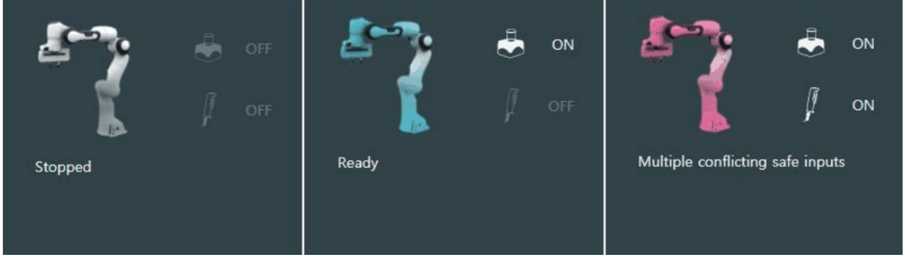
Start Manual은 분홍색을 "충돌 신호를 받음 (물리적 충돌)"으로 옮겼지만, Desk 화면(그림 7)의 뜻은 "receiving conflicting enable signals", 곧 서로 어긋나는 활성화 신호입니다. 표는 Desk 화면을 따랐습니다.
설치 가이드의 LED 표는 흰색 = 잠김, 파란색 = 준비 완료(FCI 제어 가능), 초록색 = 가이딩 모드, 노란색 = 잠금 해제 중 · 대기, 분홍 · 보라색 = 업데이트 · 부팅 중으로 적어 Desk 화면과 다릅니다. 두 자료 모두 파란색일 때 외부 제어가 가능하다는 점은 같습니다.
Desk 프로그래밍 설정
그리퍼 설정
SETTINGS의 End Effector에서 로봇에 장착할 그리퍼 정보를 설정할 수 있습니다. 기본 제공 그리퍼를 쓰면 반드시 Franka Hand로 설정하십시오.
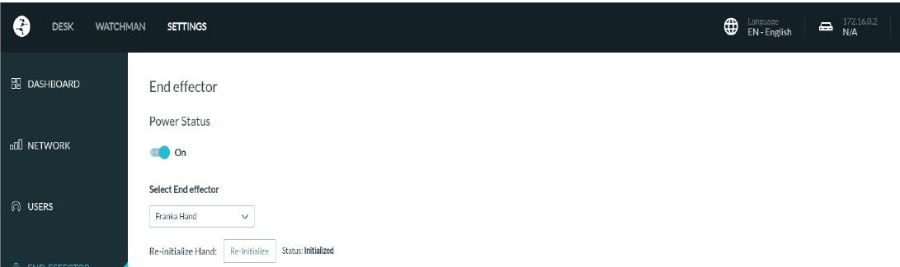
외부 활성화 장치 — OFF
외부 활성화 장치를 OFF로 둡니다. Side bar의 Robot Status에 Not Enabled가 표시됩니다.
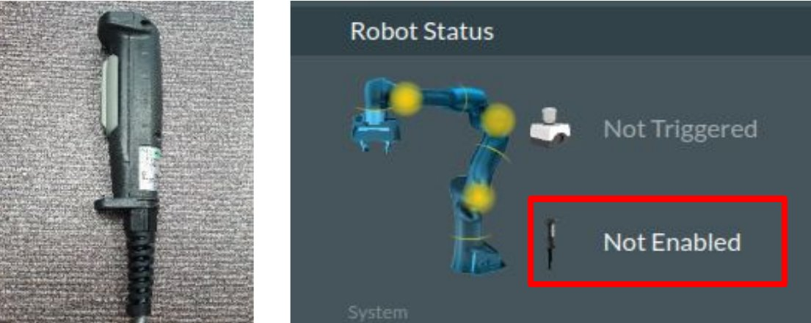
파일럿 모드 설정과 관절 잠금 해제
Pilot Mode를 설정하고, Joints에서 로봇팔 모터(관절 브레이크)의 잠금을 풉니다. 일곱 관절의 브레이크가 차례로 풀리며 딸깍 소리가 납니다.
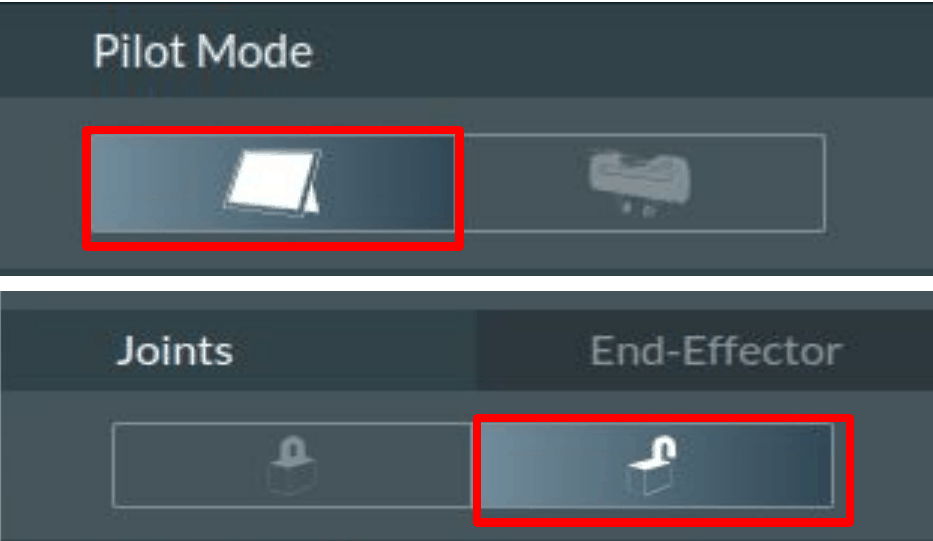
관절 잠금을 풀 때 팔이 중력으로 살짝 처질 수 있습니다. 아래에 물건이 없는지 먼저 확인하십시오.
가이딩 모드
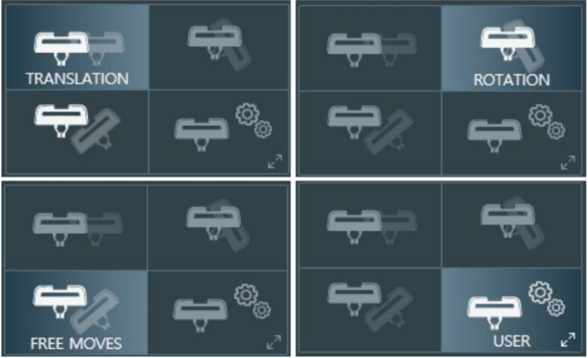
| 모드 | 움직임 |
|---|---|
| TRANSLATION | 그리퍼의 각도를 고정한 채 이동 |
| ROTATION | 로봇을 엔드 이펙터의 TCP에 고정 |
| FREE MOVES | 로봇을 제한 없이 이동 |
| USER | 손으로 움직일 때 축 이동 · 회전의 제한을 직접 설정 |
Free Drive
Free Drive 설정
가이딩 모드를 FREE MOVES로 두고, Operations를 Programming으로 둡니다.
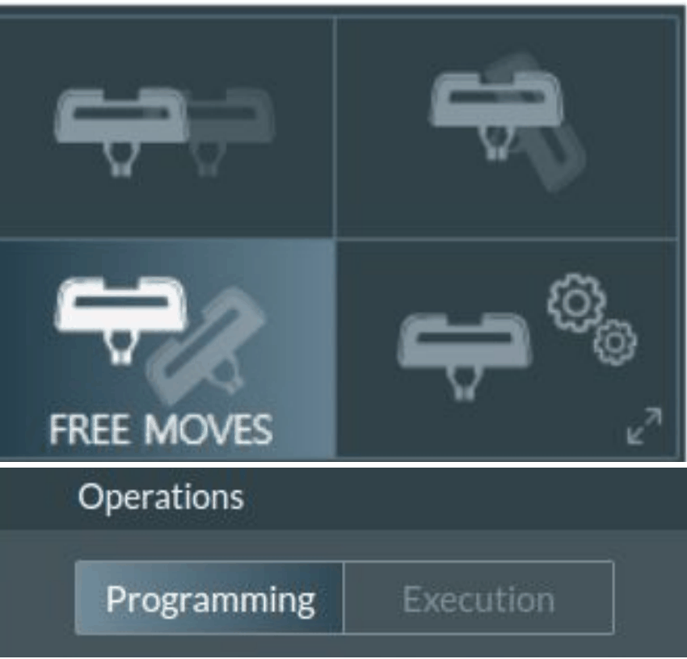
Free Drive 사용법
- Task를 추가합니다.오른쪽 아래 Task 탭에서 + 버튼을 누릅니다.
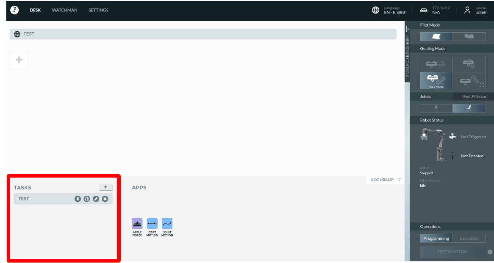
그림 14. Task 탭의 + 버튼 - Task 이름을 정합니다.
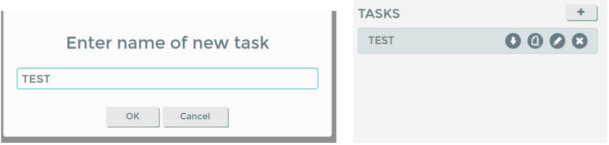
그림 15. 새 Task 이름 입력 - 앱을 Time-Line으로 옮깁니다.앱을 Time-Line으로 끌어다 놓으면 프로그램이 추가됩니다.
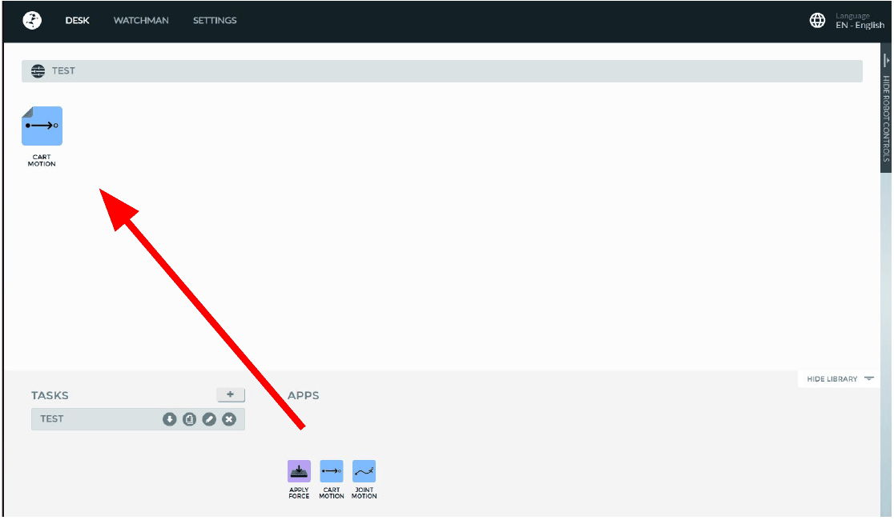
그림 16. 앱을 Time-Line으로 옮기기 - 앱 아이콘을 누릅니다.웨이포인트를 설정하는 화면이 열립니다.
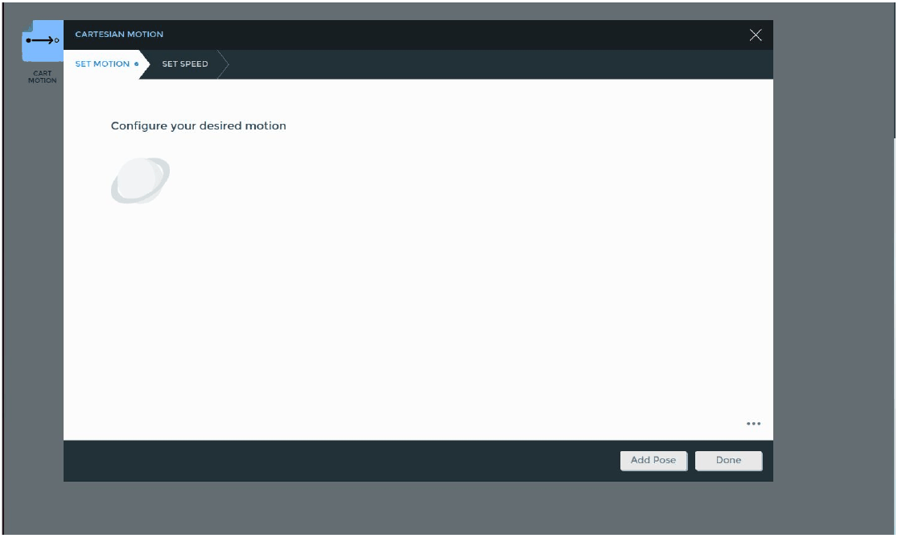
그림 17. 웨이포인트 설정 화면
하드웨어에서 웨이포인트 지정
로봇에 붙은 버튼을 누르면 Free Drive 모드에 들어가 로봇의 자세를 손으로 바꿀 수 있습니다. 원하는 자세로 로봇을 옮기고 버튼에서 손을 떼면 그 자세가 고정됩니다.
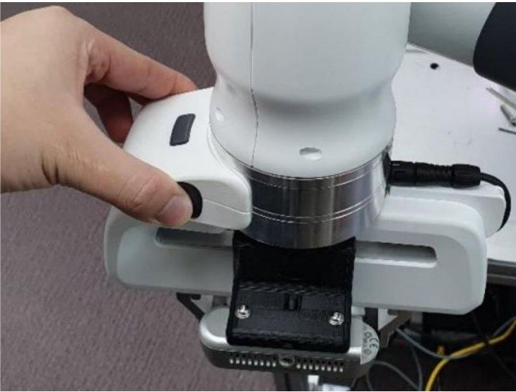
원하는 자세를 정한 뒤, 로봇의 파일럿 버튼으로 저장합니다.
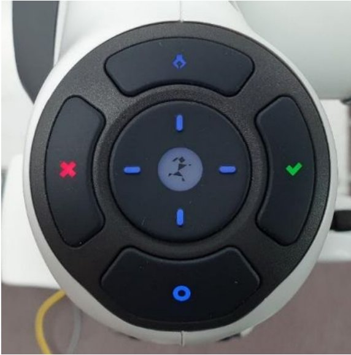
| 버튼 | 동작 |
|---|---|
| O (저장) | 로봇의 자세를 저장 |
| ✓ (티칭 완료) | 로봇 자세 저장을 마침 |
| X (삭제) | 저장한 자세를 하나 삭제 |
| 그리퍼 | 그리퍼를 제어 |
- O(저장)를 누를 때마다 자세가 추가되는지 확인합니다.
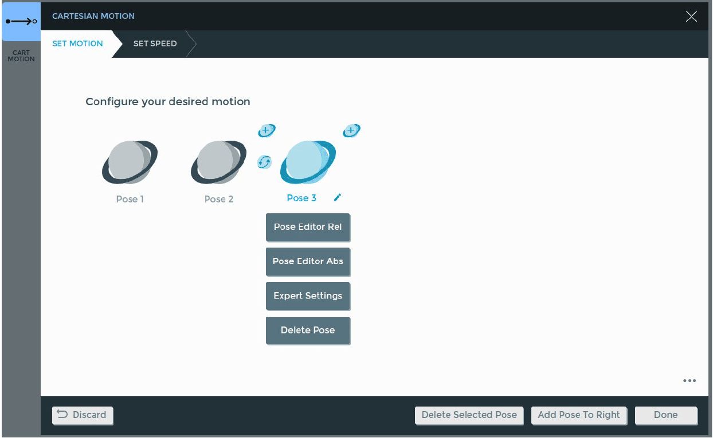
그림 20. 저장한 자세(Pose)가 추가된 화면 - 웨이포인트 설정을 마치면 ✓(티칭 완료)를 누릅니다.로봇 자세 저장이 끝납니다.
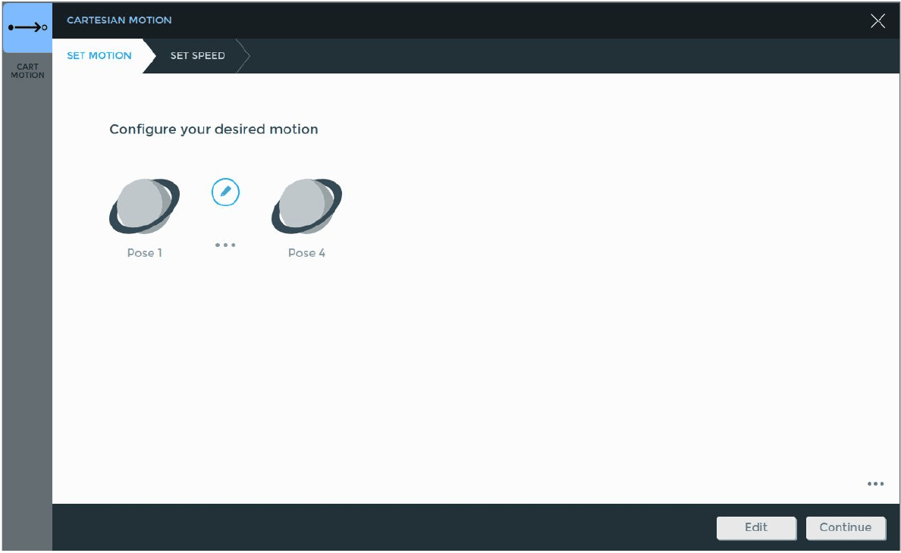
그림 21. 티칭 완료 후 화면 - 동작 속도를 정합니다.로봇이 움직일 때의 속도를 원하는 값으로 설정합니다.
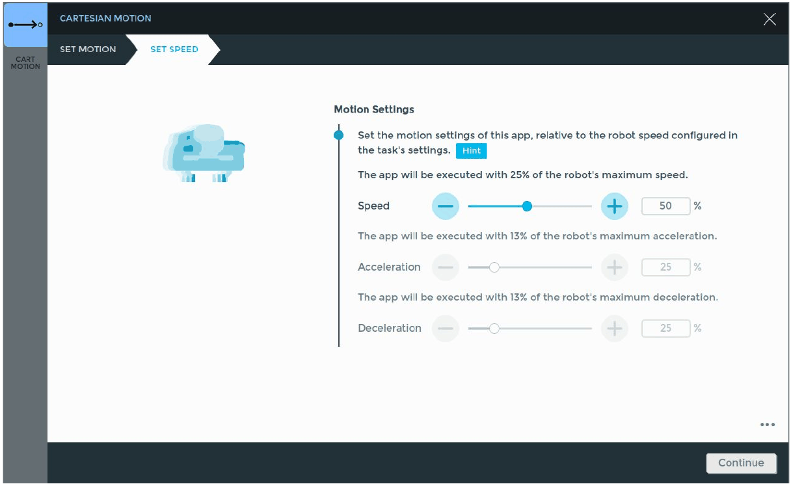
그림 22. SET SPEED: 속도 · 가속도 · 감속도 - 실행합니다.Operations 탭을 Execution으로 바꾸고 재생 버튼을 누르면 로봇팔이 움직입니다.
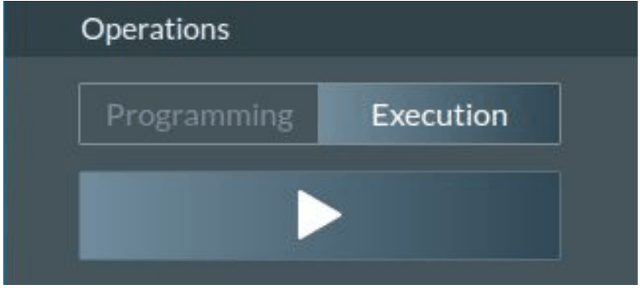
그림 23. Operations → Execution, 재생 버튼
Franka-ROS (Noetic)
Ubuntu 20.04와 ROS Noetic에서 libfranka와 franka_ros를 소스로 빌드하고, FCI를 켜서 예제 컨트롤러로 FR3를 움직입니다.
시작하기 전에
이 장은 다음과 같이 설정한 환경을 기준으로 합니다.
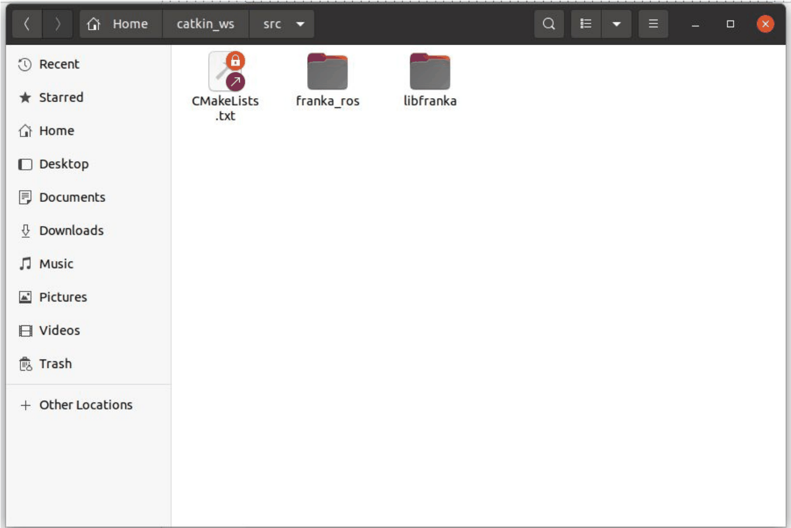
catkin_ws/src에 libfranka를 설치했습니다. catkin_make로 빌드할 때 libfranka 경로는~/catkin_ws/src/libfranka/build입니다.- 실시간(Real-Time) 커널을 설치하지 않았습니다. 필요하면 Franka 문서의 Setting Up the Real-Time Kernel을 참조하십시오.
- 실시간 커널 없이 쓰려면
~/catkin_ws/src/franka_ros/franka_control/config/franka_control_node.yaml파일에서realtime_config를enforce에서ignore로 바꿉니다.
# Used to decide whether to enforce realtime mode [enforce|ignore]
realtime_config: ignore
시험 환경 실측
| 항목 | 버전 |
|---|---|
| OS | Ubuntu 20.04 |
| ROS | Noetic |
| FR3 시스템 | 5.3.1 |
| libfranka | 0.10.0 |
| ROS 패키지 | franka_ros |
libfranka 설치 (소스 빌드)
- 의존 패키지를 설치합니다.Ubuntu의 패키지 관리자로 설치합니다.
sudo apt install build-essential cmake git libpoco-dev libeigen3-dev
- GitHub에서 libfranka 소스를 받습니다.
git clone --recursive https://github.com/frankaemika/libfranka --branch 0.10.0 cd libfranka
- 빌드 폴더를 만들고 CMake를 실행합니다.
mkdir build cd build cmake -DCMAKE_BUILD_TYPE=Release -DBUILD_TESTS=OFF .. cmake --build .
나중에 빌드에서 Franka 설정(Franka config)을 찾을 수 없다는 오류가 나면 Debian 패키지로 설치합니다.cpack -G DEB sudo dpkg -i libfranka*.deb
Franka의 GitHub 저장소는 github.com/frankaemika에서 github.com/frankarobotics로 옮겨졌습니다. 옛 주소는 새 주소로 넘어가므로 이 책의 명령은 그대로 동작합니다 (2026-11-18 확인).
ROS 패키지 빌드
- Catkin 작업 공간을 만듭니다.ROS Noetic을 설정한 뒤, 고른 폴더에 만듭니다.
cd /path/to/desired/folder mkdir -p catkin_ws/src cd catkin_ws source /opt/ros/noetic/setup.sh catkin_init_workspace src
- GitHub에서 franka_ros 소스를 받습니다.
git clone --recursive https://github.com/frankaemika/franka_ros src/franka_ros
- 빠진 의존 패키지를 설치하고 빌드합니다.
/path/to/libfranka/build에는 libfranka의 빌드 폴더(이 장의 환경에서는~/catkin_ws/src/libfranka/build)를 넣습니다.rosdep install --from-paths src --ignore-src --rosdistro noetic -y --skip-keys libfranka catkin_make -DCMAKE_BUILD_TYPE=Release -DFranka_DIR:PATH=/path/to/libfranka/build source devel/setup.sh
Desk 원격 제어 설정
- Operations 탭에서 Execution을 켭니다.
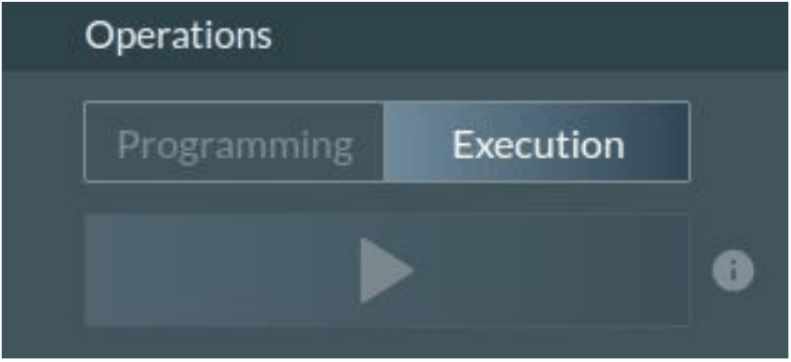
그림 25. Operations → Execution - FCI를 켜고 상태를 확인합니다.왼쪽 위의 로봇 설정 메뉴에서 Activate FCI를 켜고, Robot Status 탭이 녹색(FCI ON)인지 확인합니다.
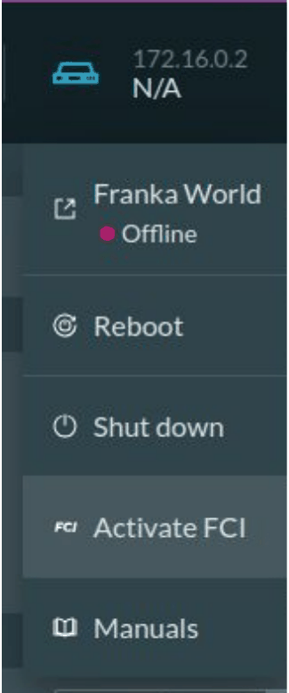
그림 26. 로봇 설정 메뉴 → Activate FCI 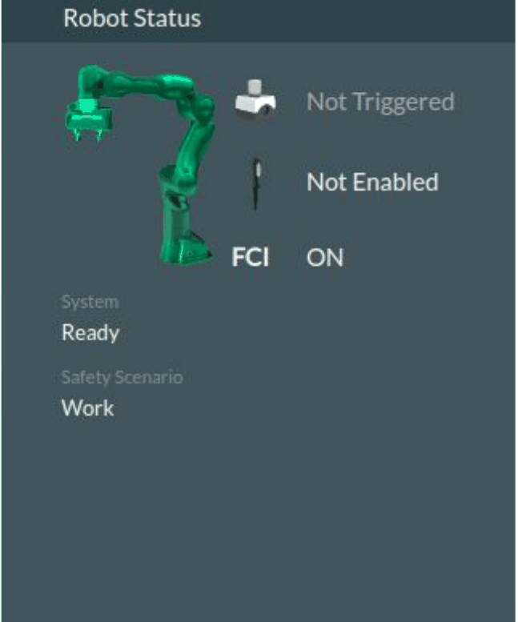
그림 27. Robot Status: FCI ON
- FCI를 켜면 Desk의 Task · App 편집은 잠깁니다. 제어권이 외부 PC로 넘어간 것입니다.
- Desk로 되돌아가려면 메뉴에서 Deactivate FCI를 누릅니다.
예제 실행
로봇을 시작 자세로 옮긴 뒤 팔꿈치 예제 컨트롤러를 실행합니다.
cd catkin_ws source /opt/ros/noetic/setup.bash source devel/setup.sh roslaunch franka_example_controllers move_to_start.launch robot_ip:=172.16.0.2 load_gripper:=true robot:=fr3 roslaunch franka_example_controllers elbow_example_controller.launch robot_ip:=172.16.0.2 load_gripper:=true robot:=fr3
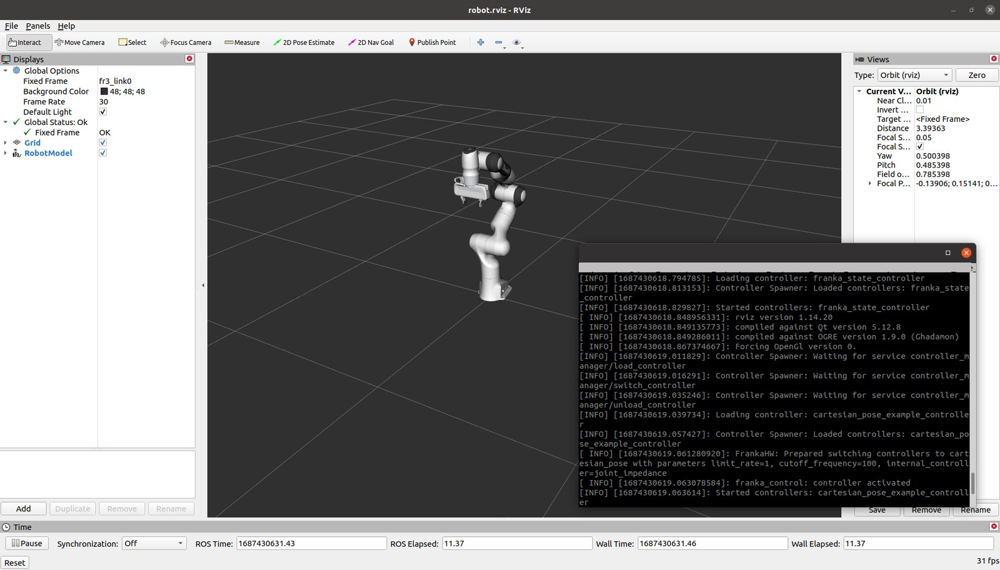
MoveIt으로 움직이기
Noetic에서 MoveIt으로 실제 로봇을 움직이는 방법입니다. 원래 Panda 로봇을 기준으로 쓴 커뮤니티 글의 방법을 옮겼습니다.
- franka_control을 실행합니다.
roslaunch panda_moveit_config franka_control.launch robot_ip:=172.16.0.2
- 로봇을 움직입니다.RViz에서 로봇을 움직이거나, Python 코드를 써서 움직일 수 있습니다.
예를 들어 다른 터미널 탭에서 튜토리얼 Python 코드를 실행합니다.
rosrun moveit_tutorials move_group_python_interface_tutorial.py
Franka-ROS 2 (Humble)
Ubuntu 22.04와 ROS 2 Humble에서 실시간 커널을 설치하고, libfranka와 franka_ros2를 소스로 빌드해 예제를 실행합니다. ROS 2 Humble은 미리 설치되어 있어야 합니다.
시작하기 전에
이 장은 다음과 같이 설정한 환경을 기준으로 합니다.
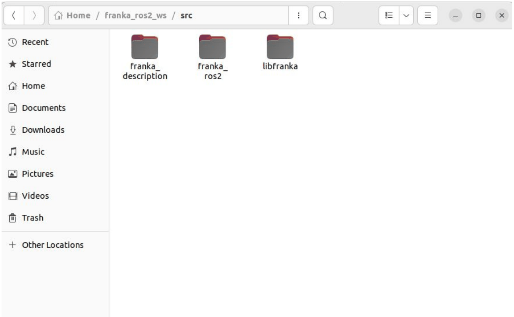
franka_ros2_ws/src에 libfranka를 설치했습니다. libfranka 빌드 폴더는~/franka_ros2_ws/src/libfranka/build입니다.- 실시간(Real-Time) 커널을 Ubuntu Pro로 설치했습니다. ubuntu.com/pro에서 회원 가입한 뒤 Ubuntu Pro 토큰을 받습니다.
- 토큰을 등록하고 실시간 커널을 켭니다.
sudo pro attach <your token> sudo pro enable realtime-kernel
- 실시간 커널이 설치되었는지 확인합니다.재부팅한 뒤 커널 이름에
realtime이 보이면 됩니다.$ uname -r 5.15.0-1073-realtime
Ubuntu Pro 구독이 없으면 PREEMPT_RT 커널을 직접 빌드해 설치합니다. 순서는 Franka 문서의 Setting Up the Real-Time Kernel을 따르십시오.
실시간 커널이나 실시간 권한이 없으면 Setting current thread to real-time priority failed, communication_constraints_violation 오류가 납니다.
시험 환경 실측
| 항목 | 버전 |
|---|---|
| OS | Ubuntu 22.04 |
| ROS | ROS 2 Humble |
| FR3 시스템 | 5.6.0 |
| libfranka | 0.13.3 |
| ROS 2 패키지 | franka_ros2 |
franka_ros2 받기
- 경고와 오류를 색 글씨로 보이게 합니다.
echo 'export RCUTILS_COLORIZED_OUTPUT=1' >> ~/.bashrc
- 의존 패키지를 설치합니다.
sudo apt install -y \ ros-humble-ament-cmake \ ros-humble-ament-cmake-clang-format \ ros-humble-angles \ ros-humble-ros2-controllers \ ros-humble-ros2-control \ ros-humble-ros2-control-test-assets \ ros-humble-controller-manager \ ros-humble-control-msgs \ ros-humble-control-toolbox \ ros-humble-generate-parameter-library \ ros-humble-joint-state-publisher \ ros-humble-joint-state-publisher-gui \ ros-humble-moveit \ ros-humble-pinocchio \ ros-humble-realtime-tools \ ros-humble-xacro \ ros-humble-hardware-interface \ ros-humble-ros-gz \ python3-colcon-common-extensions
- 작업 공간을 만듭니다.
mkdir -p ~/franka_ros2_ws/src
- franka_ros2와 franka_description을 받습니다.패키지 빌드는 libfranka를 빌드한 뒤에 합니다.
source /opt/ros/humble/setup.bash cd ~/franka_ros2_ws git clone -b humble https://github.com/frankaemika/franka_ros2.git src/franka_ros2 git clone https://github.com/frankaemika/franka_description.git src/franka_description
Start Manual은 franka_ros2를 브랜치 없이 받습니다. 2026-11-18 현재 이 저장소의 기본 브랜치는 jazzy이므로, Humble에서는 설치 가이드처럼 -b humble을 붙여 받으십시오.
로봇 시스템 버전에 맞는 franka_ros2 버전은 1장의 호환 표(표 4)를 보십시오.
libfranka 설치 (소스 빌드)
- 경고와 오류를 색 글씨로 보이게 합니다.앞에서 했으면 건너뜁니다.
echo 'export RCUTILS_COLORIZED_OUTPUT=1' >> ~/.bashrc source ~/.bashrc
- 의존 패키지를 설치합니다.
sudo apt-get update sudo apt-get install -y \ build-essential \ cmake \ git \ libpoco-dev \ libeigen3-dev \ dpkg - 관련 의존 패키지를 설치합니다.robotpkg 저장소를 추가해 pinocchio를 설치합니다.
sudo apt-get install -y \ liburdfdom-headers-dev \ libconsole-bridge-dev \ libtinyxml2-dev sudo apt-get install -qqy lsb-release curl mkdir -p /etc/apt/keyrings curl http://robotpkg.openrobots.org/packages/debian/robotpkg.asc \ | sudo tee /etc/apt/keyrings/robotpkg.asc echo "deb [arch=amd64 signed-by=/etc/apt/keyrings/robotpkg.asc] http://robotpkg.openrobots.org/packages/debian/pub $(lsb_release -cs) robotpkg" \ | sudo tee /etc/apt/sources.list.d/robotpkg.list sudo apt-get update \ && sudo apt-get install -qqy robotpkg-pinocchio - 충돌을 막기 위해 기존 libfranka 패키지를 지웁니다.
sudo apt remove "*libfranka*"
- libfranka를 받아 빌드하고 설치합니다.버전은 로봇에 맞게 고릅니다 (1장 표 4).
cd ~/franka_ros2_ws/src git clone --recursive https://github.com/frankaemika/libfranka.git cd libfranka git tag -l # 필요에 따라 버전 선택 git checkout 0.13.3 git submodule update mkdir build cd build export CMAKE_PREFIX_PATH=/opt/openrobots/lib/cmake cmake -DCMAKE_BUILD_TYPE=Release -DBUILD_TESTS=OFF -DCMAKE_PREFIX_PATH=/opt/openrobots/lib/cmake .. cmake --build . # Debian 패키지로 libfranka 설치 cpack -G DEB sudo dpkg -i libfranka*.deb
- libfranka 빌드를 시험합니다.문제가 없으면 명령이 끝까지 동작합니다. 오류가 나면 아래 '실시간 권한 주기'를 마친 뒤 다시 시도합니다.
cd ~/franka_ros2_ws/src/libfranka/build/examples ./communication_test <robot-ip>
communication_test는 로봇을 움직이지 않고 통신 품질만 잽니다. 결과는 아래 기준으로 판단합니다.
#Sent messages: 10000 #Success: 10000 #Failures: 0 Success rate: 100 %
| 성공률 | 판정 | 조치 |
|---|---|---|
| 100% | 완벽 | 다음 단계로 넘어갑니다 |
| 99.9% 이상 | 사용 가능 | 써도 되지만, 긴 제어 루프에서 끊길 수 있습니다 |
| 99.9% 미만 | 사용 불가 | 실시간 커널 · 실시간 권한 · 스위치 제거를 다시 점검합니다 |
상태만 읽어 보려면 ./echo_robot_state <robot-ip>를 실행합니다. 로봇은 움직이지 않고, 로봇 상태(JSON)가 계속 출력됩니다 (Ctrl+C로 끝냄).
여기서 Incompatible library version이 나오면 1장의 호환 표로 돌아가 libfranka 버전을 다시 고르고, Connection timeout이면 3장의 네트워크 설정을 확인하십시오.
Start Manual은 예제 폴더를 build/example로 적었지만, libfranka가 예제를 만드는 폴더는 build/examples입니다 (설치 가이드 · Franka 문서). 이 책은 examples로 적었습니다.
franka_ros2 빌드
source /opt/ros/humble/setup.bash cd ~/franka_ros2_ws colcon build --cmake-args -DCMAKE_BUILD_TYPE=Release source install/setup.sh
실시간 권한 주기
사용자가 자기 프로세스에 실시간 우선순위를 줄 수 있게 합니다.
- realtime 그룹을 만들고 계정을 넣습니다.
sudo addgroup realtime sudo usermod -a -G realtime $(whoami)
- realtime 그룹의 한도를 추가합니다.
/etc/security/limits.conf에 아래 여섯 줄을 덧붙입니다.sudo tee -a /etc/security/limits.conf > /dev/null << 'EOF' @realtime soft rtprio 99 @realtime soft priority 99 @realtime soft memlock 102400 @realtime hard rtprio 99 @realtime hard priority 99 @realtime hard memlock 102400 EOF
- 재부팅합니다.셸을 다시 여는 것만으로는 적용되지 않습니다 (로그아웃 → 로그인도 됩니다).
sudo reboot
- 확인합니다.
groups에realtime이 있고,ulimit -r이99,ulimit -l이102400이면 됩니다.
Start Manual은 cd /etc/security → sudo chmod 777 limit.conf → gedit limit.conf로 적었습니다. 파일 이름은 limits.conf이며,
설치 가이드는 권한을 바꾸지 않고 sudo tee -a로 덧붙입니다. 이 책은 설치 가이드의 명령을 따랐습니다. 넣는 여섯 줄은 두 자료가 같습니다.
예제 실행
github.com/frankaemika/libfranka/tree/main/examples에 있는 예제를 실행해 로봇을 제어합니다. 예:
cd ~/franka_ros2_ws/src/libfranka/build/examples ./cartesian_impedance_control <robot-ip>
FCI를 켜고(그림 26), 패키징 자세가 아닌 자세에서 예제를 실행하십시오.
franka_ros2 실행
새 터미널마다 환경을 source해야 합니다.
source /opt/ros/humble/setup.bash source ~/franka_ros2_ws/install/setup.bash # 기본 브링업: 하드웨어 인터페이스 + 상태 퍼블리셔 + RViz ros2 launch franka_bringup franka.launch.py robot_ip:=172.16.0.2 arm_id:=fr3 # 예제 컨트롤러 실행 (로봇이 움직입니다) ros2 launch franka_bringup example.launch.py \ robot_ip:=172.16.0.2 \ arm_id:=fr3 \ controller_name:=joint_impedance_example_controller # 그리퍼 노드 ros2 launch franka_gripper gripper.launch.py robot_ip:=172.16.0.2 # 로봇 없이 시험 (fake hardware) ros2 launch franka_bringup franka.launch.py \ robot_ip:=dont-care use_fake_hardware:=true
| 인자 | 뜻 |
|---|---|
robot_ip | 컨트롤 박스 IP |
arm_id | fr3 (FR3) / panda (이전 모델 FER) |
use_fake_hardware | true면 로봇 없이 시뮬레이션 |
load_gripper | true / false |
use_rviz | true / false |
위 명령은 설치 가이드의 것입니다. franka_ros2 버전에 따라 인자가 다릅니다. humble 브랜치 현재판(2026-11-18 확인)의 franka.launch.py는 arm_id 대신 robot_type을 쓰고(7장의 제어 UI도 robot_type),
example.launch.py는 로봇 IP 같은 값을 franka_bringup/config/franka.config.yaml에서 읽습니다. 설치한 버전의 launch 파일 머리말을 확인하십시오.
| 컨트롤러 | 하는 일 | 위험도 |
|---|---|---|
gravity_compensation_example_controller | 중력만 보상합니다. 손으로 밀면 움직입니다 | 낮음 |
model_example_controller | 동역학 모델 값을 출력만 합니다 | 낮음 |
joint_impedance_example_controller | 관절 임피던스로 사인파를 따라갑니다 | 중간 |
joint_velocity_example_controller | 관절 속도 명령 | 중간 |
cartesian_pose_example_controller | 끝단을 원을 그리며 움직입니다 | 중간 |
cartesian_velocity_example_controller | 끝단 속도 명령 | 중간 |
cartesian_elbow_example_controller | 끝단을 고정하고 팔꿈치만 움직입니다 | 중간 |
설치한 버전의 실제 목록은 ~/franka_ros2_ws/src/franka_ros2/franka_bringup/config/controllers.yaml에서 확인합니다.
토픽 · 컨트롤러 확인 명령
# 토픽 목록 · 관절 상태 ros2 topic list ros2 topic echo /joint_states # Franka 전용 상태 (외력, 관절 토크, 오차 등) ros2 topic echo /franka_robot_state_broadcaster/robot_state ros2 topic echo /franka_robot_state_broadcaster/measured_joint_states ros2 topic echo /franka_robot_state_broadcaster/external_wrench_in_base_frame # 컨트롤러 상태 ros2 control list_controllers ros2 control list_hardware_interfaces # 컨트롤러 전환 ros2 control switch_controllers \ --deactivate joint_impedance_example_controller \ --activate joint_trajectory_controller # 오류 복구 서비스 ros2 service call /service_server/error_recovery franka_msgs/srv/ErrorRecovery # 충돌 임계값 변경 서비스 찾기 ros2 service list | grep service_server
RViz에 로봇 모델은 뜨는데 /joint_states가 흐르지 않으면 하드웨어 인터페이스 연결에 실패한 것입니다. FCI가 켜져 있는지 확인하십시오.
MoveIt 2
# 설치 (franka_ros2를 빌드할 때 이미 들어갔을 수도 있습니다) sudo apt install -y ros-humble-moveit ros-humble-moveit-servo # 실제 로봇 source /opt/ros/humble/setup.bash source ~/franka_ros2_ws/install/setup.bash ros2 launch franka_fr3_moveit_config moveit.launch.py robot_ip:=172.16.0.2 # 로봇 없이 (fake hardware) ros2 launch franka_fr3_moveit_config moveit.launch.py \ robot_ip:=dont-care use_fake_hardware:=true
- 왼쪽 MotionPlanning 패널을 확인합니다.
- 목표 자세를 정합니다.로봇 끝단의 인터랙티브 마커(공 · 화살표)를 끌어 목표 자세를 지정합니다.
- Planning 탭에서 Plan을 누릅니다.주황색 궤적으로 미리 보여 줍니다.
- 궤적이 안전하면 Execute를 누릅니다.
Plan & Execute는 계획하자마자 실행합니다. 처음에는 쓰지 마십시오. Velocity Scaling · Acceleration Scaling 슬라이더를 0.1로 낮춰 두고 시작하십시오.
WeGo FR3 제어 UI
franka_control_ui는 FR3를 PC 화면 하나로 조작하는 WeGo의 데스크톱 제어 패널(FR3 Control Deck)입니다. Desk 웹 페이지를 열지 않고 로그인 · 제어권 · 관절 잠금 해제 · FCI를 처리하고, 브링업(ros2_control), 관절 조그, 웨이포인트 저장 · 재생, 임피던스 모드를 같은 화면에서 실행합니다.
| 항목 | 내용 |
|---|---|
| 소프트웨어 | franka_control_ui v0.1.0 · FR3 Control Deck |
| 로봇 | Franka FR3 (Robot System 5.10.0) |
| ROS | ROS 2 Humble |
이 장은 UI 사용법만 다룹니다. 설치, 네트워크 설정, 컨트롤러 게인 변경은 패키지의 README.md(1 ~ 6장)를 따르십시오.
안전 수칙
- 처음 쓸 때는 외부 비상 정지(E-stop) 스위치를 손에 쥐고, 작업 반경 안에 사람과 장애물이 없는 상태에서 SPEED 10% 이하로 시작하십시오.
- UI의 STOP 버튼과 Esc 키는 소프트웨어 정지입니다. 비상 상황에서는 언제나 외부 E-stop을 누르십시오.
- 로봇을 움직이는 버튼은 실행 전에 확인 창이 뜹니다. 내용을 읽고 OK를 누르십시오. 확인 창의 기본 선택은 Cancel입니다.
실행
로봇의 FCI 포트와 PC를 직접 연결하고, PC IP를 같은 대역(예: 172.16.0.10/24)으로 맞춘 뒤 실행합니다 (3장).
source ~/franka_ros2_ws/install/setup.bash ros2 launch franka_control_ui control_ui.launch.py robot_ip:=172.16.0.2
| 인자 | 기본값 | 설명 |
|---|---|---|
robot_ip | 172.16.0.2 | 로봇 IP |
robot_type | fr3 | 로봇 종류 |
namespace | (빈 값) | ROS 네임스페이스 |
desk_user / desk_password | 예시 값 | Desk 계정. 기본값은 예시 값이라 대부분의 로봇과 맞지 않습니다. 로봇을 처음 설정할 때 만든 계정을 넣거나, UI의 로그인 칸에 입력하십시오 |
창은 최대화 상태로 열립니다. 화면이 레이아웃보다 작으면 스크롤 막대가 생깁니다.
화면 구성
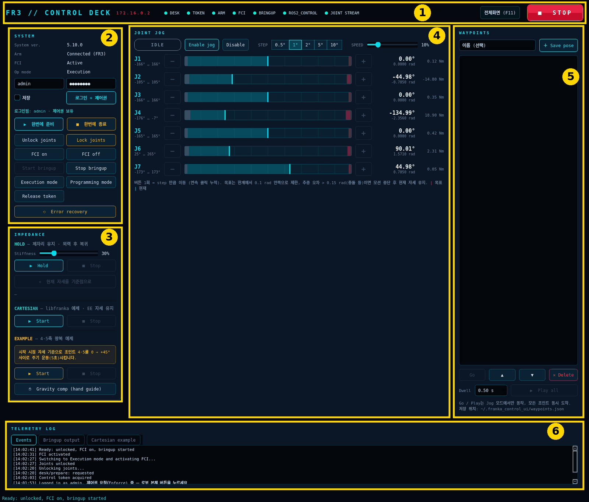
| 번호 | 영역 | 역할 |
|---|---|---|
| 1 | 헤더 | 로봇 IP, 상태 표시등 7개, 전체 화면 전환, STOP |
| 2 | SYSTEM | 로봇 정보, Desk 로그인 · 제어권, 한번에 준비 · 종료, 단계별 버튼, Error recovery |
| 3 | IMPEDANCE | Hold, Cartesian 임피던스 예제, 4 · 5축 왕복 예제, 중력 보상(hand guide) |
| 4 | JOINT JOG | 현재 모드 표시, 조그 켜기 · 끄기, STEP · SPEED, 관절 7개의 게이지 · 각도 · 토크 |
| 5 | WAYPOINTS | 자세 저장, 목록, Go · 순서 변경 · 삭제, 순차 재생 |
| 6 | TELEMETRY LOG | Events, Bringup output, Cartesian example 로그 탭 |
창 맨 아래 상태 줄에는 마지막 동작의 결과가 표시됩니다. 성공은 초록색, 실패는 빨간색입니다.
헤더와 상태 표시등
표시등은 0.1초마다 갱신됩니다. 초록색은 정상, 주황색은 중간 상태, 빨간색은 실패, 회색은 꺼짐입니다.
| 표시등 | 초록색 조건 | 그 밖의 색 |
|---|---|---|
| DESK | 로봇 Desk에 접속됨 | 빨간색: 네트워크 연결 실패 (ping 확인) |
| TOKEN | 이 PC가 제어권을 가짐 | 회색: 제어권 없음 |
| ARM | 관절 잠금 해제 상태 (Connected) | 주황색: 잠김 등 다른 상태 |
| FCI | FCI 활성 (Active) | 주황색: 비활성 |
| BRINGUP | 브링업 프로세스 실행 중 | 회색: 꺼짐 |
| ROS2_CONTROL | controller manager 응답 | 회색: 브링업 전 또는 시작 중 |
| JOINT STREAM | 관절 상태가 1초 안에 들어오고 있음 | 회색: 관절 값 수신 없음 |
로봇을 움직일 수 있는 상태는 표시등 7개가 모두 초록색일 때입니다.
단축키
| 키 | 동작 |
|---|---|
| Esc | STOP (모든 동작 컨트롤러 해제) |
| F11 | 전체 화면 전환 |
| Enter (비밀번호 칸) | 로그인 + 제어권 |
로봇 준비
로그인과 제어권
- SYSTEM 패널에 Desk 아이디와 비밀번호를 입력합니다.로봇을 처음 설정할 때 만든 계정을 씁니다. 런치 인자의 기본값은 대부분의 로봇과 맞지 않습니다.
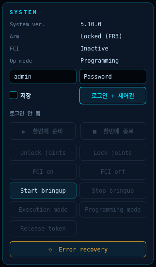
그림 32. SYSTEM 패널: 로그인 전 (단계별 버튼 비활성) - 로그인 + 제어권을 누릅니다.상태 줄에 "60초 안에 로봇 본체 버튼을 누르세요"가 표시됩니다.
- 60초 안에 로봇 본체의 확인 버튼을 누릅니다.다른 사용자가 제어권을 갖고 있어도 강제로(Enforce) 가져옵니다.
- 결과를 확인합니다.성공하면 "로그인됨: · 제어권 보유"가 초록색으로 표시되고 TOKEN 표시등이 켜집니다.
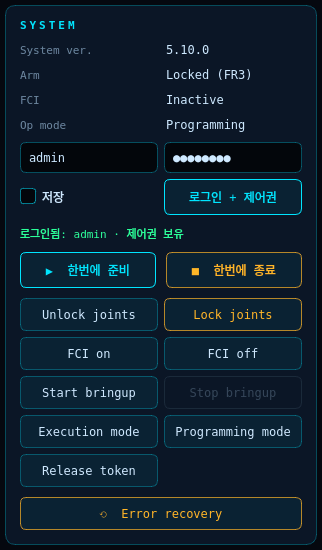
그림 33. SYSTEM 패널: 로그인 · 제어권 획득 후
저장을 체크하고 로그인하면 아이디와 비밀번호가 ~/.franka_control_ui/desk.json에 평문(권한 600)으로 저장되어 다음 실행부터 자동으로 입력됩니다.
공용 PC에서는 체크하지 마십시오. 체크를 풀고 로그인하면 저장된 파일이 삭제됩니다.
제어권이 없으면 단계별 Desk 버튼과 한번에 준비 · 종료 버튼이 비활성(회색)입니다. Start bringup과 Error recovery는 제어권 없이도 누를 수 있습니다.
한번에 준비
▶ 한번에 준비를 누르고 확인 창에서 OK를 누르면 아래를 순서대로 실행합니다.
- 관절 브레이크 해제수 초 걸립니다.
- Execution 모드 전환 + FCI 활성화
- 브링업(franka_bringup, ros2_control) 시작
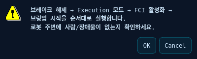
완료되면 상태 줄에 Ready: unlocked, FCI on, bringup started가 표시되고 헤더 표시등 7개가 모두 초록색이 됩니다. ROS2_CONTROL과 JOINT STREAM은 브링업 후 몇 초 뒤에 켜집니다.
단계별 버튼
한번에 준비가 어느 단계에서 실패했는지 확인하거나, 일부만 실행할 때 씁니다.
| 버튼 | 동작 | 비고 |
|---|---|---|
| Unlock joints | 관절 브레이크 해제 | 확인 창 있음 |
| Lock joints | 관절 브레이크 잠금 | 먼저 동작 컨트롤러를 해제합니다 |
| FCI on / FCI off | FCI 켜기 · 끄기 | FCI off 시 실행 중인 브링업도 종료됩니다 |
| Start bringup / Stop bringup | 브링업 시작 · 종료 | 실행 상태에 따라 한쪽만 활성 |
| Execution mode / Programming mode | Desk 운용 모드 전환 | FCI on은 자동으로 Execution 모드로 바꿉니다 |
| Release token | 제어권 반납 | 다른 PC나 Desk 웹에서 로봇을 쓸 때 |
SYSTEM 패널 위쪽의 System ver., Arm, FCI, Op mode 값으로 각 단계의 결과를 확인합니다.
관절 조그
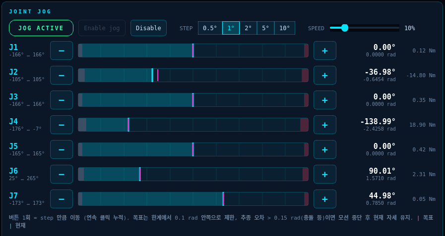
- Enable jog를 누르고 확인 창에서 OK를 누릅니다.활성화한 순간의 자세를 그대로 유지하며, 모드 표시가 JOG ACTIVE(초록)로 바뀝니다.
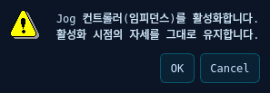
그림 36. Enable jog 확인 창 - STEP에서 한 번 누를 때 움직일 각도를 고릅니다.0.5°, 1°, 2°, 5°, 10° 중에서 고르며, 기본은 1°입니다.
- SPEED 슬라이더로 속도를 정합니다.1 ~ 50%, 기본 10%입니다. 처음에는 10% 이하로 쓰십시오.
- 관절(J1 ~ J7)별 −/+를 누릅니다.한 번 누를 때 STEP만큼 움직이며, 빠르게 연속으로 누르면 목표가 누적됩니다.
- 끝나면 Disable을 누릅니다.모든 동작 컨트롤러가 해제됩니다.
각 관절 행은 왼쪽부터 관절 이름과 가동 범위, − 버튼, 게이지, + 버튼, 현재 각도(도 / rad), 관절 토크(Nm)입니다.
| 표시 | 뜻 |
|---|---|
| 청록색 선과 채움 | 현재 위치 |
| 분홍색 선 | 목표 위치 (조그 목표 또는 Hold 기준점) |
| 양 끝 붉은 영역 | 관절 한계에서 0.1 rad 안쪽. 목표는 이 영역에 들어가지 않도록 제한됩니다 |
추종 오차가 0.15 rad을 넘으면(충돌 등) 모션을 멈추고 현재 자세를 유지합니다. −/+ 버튼은 Jog 모드이고 관절 값이 들어올 때만 활성입니다.
웨이포인트
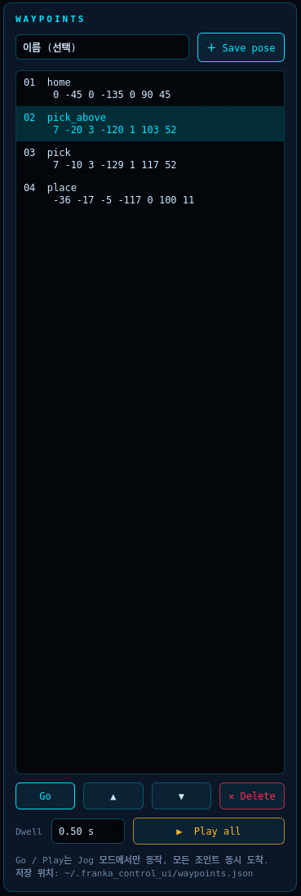
저장
- 로봇을 원하는 자세에 둡니다.조그나 손(Gravity comp)으로 옮깁니다.
- 이름 칸에 이름을 입력합니다.비워 두면 WP1, WP2… 순으로 자동으로 붙습니다.
- ＋ Save pose를 누릅니다.현재 관절 값이 목록 맨 아래에 추가됩니다.
목록의 각 항목은 순번, 이름, 관절 7개 각도(도)입니다. 저장 위치는 ~/.franka_control_ui/waypoints.json이며 UI를 다시 켜도 남습니다.
Save pose는 관절 값이 들어오는 상태면 Jog 모드가 아니어도 동작합니다.
이동과 편집
| 버튼 | 동작 |
|---|---|
| Go | 선택한 웨이포인트로 이동. 확인 창에 최대 관절 변위와 속도가 표시됩니다 |
| ▲ / ▼ | 선택한 웨이포인트의 순서를 위 · 아래로 이동 |
| ✕ Delete | 선택한 웨이포인트 삭제 (확인 창 없음) |
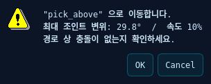
순차 재생
- Jog 모드를 켭니다.Go와 Play all은 Jog 모드에서만 활성입니다.
- Dwell에 각 웨이포인트에 도착한 뒤 머무를 시간을 입력합니다.0 ~ 10초, 기본 0.5초입니다.
- ▶ Play all을 누르고 확인 창에서 OK를 누릅니다.목록 순서대로 이동합니다.
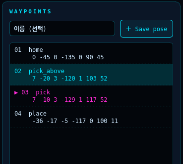
그림 39. 순차 재생 중: 현재 웨이포인트가 ▶ 표시와 분홍색으로 강조됨
이동은 모든 관절이 동시에 도착하도록 속도를 맞춥니다. 재생 중에는 조그 · Go · Play 버튼이 비활성이며, Esc 또는 STOP으로 멈춥니다.
순차 재생은 경로 중간의 충돌을 검사하지 않습니다. SPEED를 낮게 두고 지켜보십시오.
임피던스 모드
IMPEDANCE 패널의 모드는 한 번에 하나만 켜집니다. 다른 모드를 켜면 기존 동작 컨트롤러는 해제됩니다.
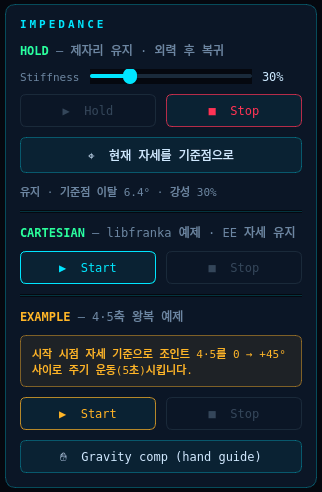
Hold (제자리 유지 · 외력 후 복귀)
현재 자세를 기준점으로 잡고 스프링처럼 버팁니다. 손으로 밀면 밀리고, 놓으면 기준점으로 천천히 돌아옵니다.
- Stiffness 슬라이더로 강성을 정합니다.10 ~ 100%, 기본 30%입니다.
- ▶ Hold를 누르고 확인 창에서 OK를 누릅니다.모드 표시가 HOLD가 됩니다.
- 동작 중 슬라이더를 움직이면 손을 뗄 때 새 강성이 바로 적용됩니다.
- 현재 자세를 기준점으로를 누르면 지금 자세가 새 기준점이 됩니다.
- ■ Stop으로 끝냅니다.
동작 중 패널 아래에 "유지/복귀 중 · 기준점 이탈 x.x° · 강성 xx%"가 표시됩니다. JOINT JOG 게이지의 분홍색 선이 기준점, 청록색 선이 현재 위치입니다.
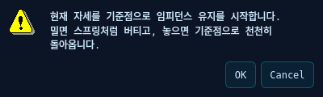
Cartesian (libfranka 예제 · 끝단 자세 유지)
libfranka 예제 cartesian_impedance_control로 현재 끝단(EE) 자세를 스프링처럼 유지합니다(병진 150 N/m, 회전 10 Nm/rad).
▶ Start로 시작하고 ■ Stop으로 끝냅니다. 출력은 TELEMETRY LOG의 Cartesian example 탭에 표시됩니다.
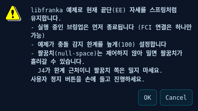
- FCI 연결은 하나만 가능하므로, 시작하면 실행 중인 브링업이 먼저 종료됩니다. 이후 조그 · Hold를 쓰려면 Cartesian을 멈추고 Start bringup을 다시 누릅니다.
- 예제가 충돌 감지 한계를 높게(100) 설정합니다.
Cartesian 예제는 팔꿈치(null-space)를 제어하지 않아, 밀면 팔꿈치가 흘러갈 수 있습니다. 팔꿈치 쪽은 밀지 마십시오.
Example (4 · 5축 왕복 예제)
franka_example_controllers의 관절 임피던스 예제입니다. 시작한 순간의 자세를 기준으로 J4와 J5를 0 → +45° 사이에서 5초 주기로 왕복시킵니다. 충돌 위험이 없는 자세에서 ▶ Start를 누르고, ■ Stop으로 끝냅니다. 실행 중 모드 표시는 IMPEDANCE RUN입니다.
Gravity comp (hand guide)
제로 토크 모드입니다. 로봇을 손으로 잡고 끌어서 움직일 수 있습니다. 웨이포인트를 손으로 가르칠 때 씁니다. 모드 표시는 HAND GUIDE입니다.
- 별도의 Stop 버튼이 없습니다. JOINT JOG 패널의 Disable 또는 STOP으로 끕니다.
페이로드 설정이 실제와 다르면 팔이 처지거나 떠오를 수 있습니다. 팔을 잡은 상태에서 켜십시오.
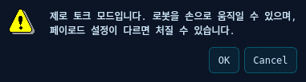
정지 · 오류 대응 · 종료
STOP
헤더 오른쪽 ■ STOP 또는 Esc 키는 즉시 정지 명령을 보내고, 웨이포인트 재생을 멈추고, 모든 동작 컨트롤러(Jog, Hold, Example, Gravity comp, Cartesian)를 해제합니다. 반사(reflex) 직후처럼 컨트롤러가 해제되지 않으면 브링업을 자동으로 다시 시작합니다(동작 컨트롤러는 켜지 않음).
비상 상황에서는 외부 E-stop을 쓰십시오.
로그
TELEMETRY LOG는 탭 3개로 되어 있습니다.
| 탭 | 내용 |
|---|---|
| Events | UI 동작 요청과 결과. 최신이 맨 위. 오류는 빨간색, 경고는 주황색 |
| Bringup output | 브링업(ros2_control) 터미널 출력 |
| Cartesian example | Cartesian 예제 출력 |
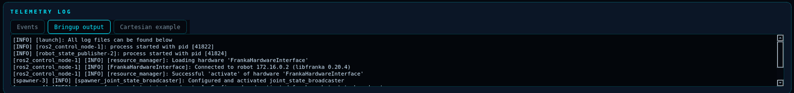
같은 내용이 ~/.franka_control_ui/ 아래(events.log, bringup.log, cartesian_impedance.log)에도 저장됩니다.
Error recovery
로봇이 반사(reflex)로 정지하거나 컨트롤러 활성화에 실패하면 Events 탭에 빨간색 오류가 남고 상태 줄이 빨간색이 됩니다. 원인(충돌, 관절 한계 등)을 확인하고 주변을 정리한 뒤 SYSTEM 패널의 ⟲ Error recovery를 누르고 다시 시도합니다.
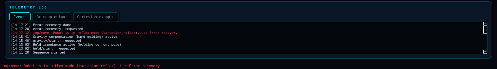
한번에 종료
작업이 끝나면 ■ 한번에 종료를 누릅니다. 아래를 순서대로 실행합니다.
- 동작 컨트롤러 해제Cartesian 예제를 포함합니다.
- 브링업 종료
- FCI 끄기
- 관절 브레이크 잠금
- 제어권 반납
브링업이 실행 중일 때 창을 닫으면 확인 창이 뜹니다. OK를 누르면 동작 컨트롤러 해제, 브링업 종료, 제어권 반납 뒤에 닫힙니다. 창 닫기는 FCI 끄기와 관절 잠금을 하지 않으므로, 로봇을 끝까지 정리하려면 한번에 종료를 먼저 누르십시오.
문제 해결
증상 → 원인 → 해결 순으로 정리했습니다. 원인을 모르면 장 끝의 진단 순서를 위에서부터 따라가십시오. 먼저 실패하는 곳이 원인입니다.
연결 · 버전 오류
| 증상 | 원인 | 해결 |
|---|---|---|
Incompatible library version. Server version: N, Library version: M | libfranka 버전과 시스템 이미지 불일치 | 1장 호환 표(표 4)를 보고 맞는 태그로 libfranka를 다시 빌드합니다 |
libfranka: Connection timeout | 네트워크 · IP · 케이블 | ping 172.16.0.2, 연결한 포트, ufw, 컨트롤 박스 부팅을 확인합니다 |
libfranka: Connection refused | FCI 미활성, 또는 다른 프로세스가 점유 | Desk에서 Activate FCI. 다른 터미널의 제어 프로그램을 끝냅니다 |
Robot is not in FCI mode | Desk에서 FCI를 켜지 않음 | 메뉴 → Activate FCI |
UDP receive: Timeout | 네트워크 지터, 스위치 경유 | 직결로 바꿉니다 |
실시간 · 통신 품질 오류
| 증상 | 원인 | 해결 |
|---|---|---|
Setting current thread to real-time priority failed | 실시간 커널이 없거나 realtime 권한이 없음 | uname -a에 PREEMPT_RT(또는 realtime), groups에 realtime, ulimit -r = 99, 재부팅(또는 로그아웃 → 로그인)했는지 확인합니다 (6장) |
communication_constraints_violation | 1 kHz 주기를 놓침 | communication_test를 실행합니다. 스위치 제거 · 백그라운드 프로그램 정리 |
control_command_success_rate 낮음 | 제어 루프가 1 ms 안에 끝나지 않음 | 제어 콜백 안에서 print · 파일 입출력을 빼고, numpy 연산을 줄입니다 |
| 부팅할 때 실시간 커널이 안 보임 | Secure Boot 또는 GRUB 설정 | BIOS에서 Secure Boot를 끄고, sudo update-grub 뒤 GRUB 메뉴에서 직접 고릅니다 |
로봇 동작 · reflex 오류
| 증상 | 원인 | 해결 |
|---|---|---|
cartesian_reflex / joint_reflex | 충돌 감지 발동 (실제 충돌 또는 임계값이 너무 낮음) | 실제 충돌인지 먼저 확인 → 오류 복구 → 필요하면 충돌 임계값(collision behavior)을 올립니다 |
joint_position_limits_violation | 목표 관절 값이 한계를 넘음 | Franka 문서(Robot Specifications)에서 한계를 확인하고 목표를 고칩니다 |
cartesian_position_limits_violation | 목표가 작업 공간 밖이거나 특이 자세 | 목표를 로봇 쪽으로 당기거나, 관절 공간 이동으로 돌아갑니다 |
joint_velocity_violation | 속도 명령이 한계를 넘음 | 속도 배율(예: franky의 relative_dynamics_factor)을 낮춥니다 |
Robot is locked | 관절 브레이크 잠김 | Desk → Joints 잠금 해제 |
| LED 빨간색 | 오류 또는 E-stop | E-stop 확인 → Desk에서 오류 메시지 확인 → 원인 제거 → 리셋 |
빌드 · 패키지 오류
| 증상 | 원인 | 해결 |
|---|---|---|
CMake: Could not find a package configuration file provided by "Franka" | libfranka 경로를 찾지 못함 | -DFranka_DIR=에 libfranka 빌드 폴더(예: ~/franka_ros2_ws/src/libfranka/build)를 넣습니다 |
colcon build 중 Killed | 메모리 부족 | --executor sequential 또는 MAKEFLAGS="-j2"로 병렬도를 낮춥니다 |
ModuleNotFoundError: franka_msgs | 작업 공간을 source하지 않음 | source ~/franka_ros2_ws/install/setup.bash |
| rosdep이 libfranka를 덮어씀 | --skip-keys 누락 | rosdep install … --skip-keys "libfranka" |
| 이전 빌드 잔재로 꼬임 | build · install · log 폴더가 남음 | rm -rf build install log 후 다시 빌드합니다 |
WeGo FR3 제어 UI
| 증상 | 원인 · 조치 |
|---|---|
| DESK 표시등 빨간색, 로그인 · Unlock 때 연결 실패 | ping <robot_ip>를 확인합니다. PC 유선 IP가 로봇과 같은 대역인지 확인합니다 |
| 로그인 때 401 | Desk 아이디 · 비밀번호 오류. 로봇을 처음 설정할 때 만든 계정을 넣습니다. 런치 인자 기본값(예시 값)은 대부분 맞지 않습니다 |
| 로그인 후 TOKEN이 켜지지 않음 | 60초 안에 로봇 본체의 확인 버튼을 누르지 않았습니다. 다시 로그인합니다 |
| 단계별 버튼이 모두 회색 | 제어권 없음. 로그인 + 제어권을 먼저 합니다 |
| FCI on 실패 | Desk에서 FCI 기능(라이선스)이 활성화되지 않았습니다. Events 탭의 오류 메시지를 확인합니다 |
Package 'franka_bringup' not found | 작업 공간을 source하지 않았습니다 → source ~/franka_ros2_ws/install/setup.bash |
| ROS2_CONTROL · JOINT STREAM이 안 켜짐 | Bringup output 탭에서 오류를 확인합니다. 다른 PC와 ROS_DOMAIN_ID가 겹치면 서로 다른 값으로 설정합니다 |
| Enable jog · Hold 버튼이 회색 | ROS2_CONTROL 꺼짐 (브링업 미실행 또는 Cartesian 실행 중) |
| −/+, Go, Play all이 회색 | Jog 모드가 아니거나 웨이포인트 재생 중 |
communication_constraints_violation 정지 | 네트워크 지연. 직결을 확인하고, 실시간 커널과 setup_realtime.sh를 적용하고, 다른 부하 프로그램을 끝냅니다 |
| 컨트롤러 활성화 실패, 반사(reflex) 오류 | ⟲ Error recovery 후 다시 시도합니다 |
Could not load the Qt platform plugin "xcb" | GUI 세션이 아닙니다(SSH 등). 로봇 PC 화면에서 직접 실행하거나 ssh -X를 씁니다 |
막혔을 때 진단 순서
위에서부터 차례로 확인하십시오. 먼저 실패하는 곳이 원인입니다.
# 1. 네트워크: 손실 0%, RTT 1 ms 미만 sudo ping -c 100 -i 0.001 172.16.0.2 # 2. 실시간 커널 uname -a # PREEMPT_RT 또는 realtime # 3. 권한 groups | grep realtime # realtime 포함 ulimit -r # 99 ulimit -l # 102400 # 4. 로봇 상태: Desk에서 LED 파란색 / 관절 잠금 해제 / FCI 활성 # 5. libfranka 통신 cd ~/franka_ros2_ws/src/libfranka/build/examples ./echo_robot_state 172.16.0.2 ./communication_test 172.16.0.2 # 6. ROS 2 printenv | grep ROS_DISTRO ros2 topic list | grep franka ros2 control list_controllers
빠른 참조
켤 때
- 컨트롤 박스 전원 ON → 부팅 대기 (약 1분)
- E-stop 해제
https://172.16.0.2→ 로그인- 관절 잠금 해제 (딸깍 소리 확인)
- LED 파란색 확인
- 메뉴 → Activate FCI
uname -a로 실시간 커널 확인ping 172.16.0.2- (선택) communication_test 100%
- 코드 실행
끌 때
- 코드 종료 (Ctrl+C)
- Desk → Deactivate FCI
- 로봇을 안전한 자세로 이동
- 관절 잠금 (Joints lock)
- E-stop 누름
- 컨트롤 박스 전원 OFF
오래 쓰지 않을 때
- 로봇을 접힌 자세(packing pose)로
- 관절 잠금 후 전원 OFF
주소 · 계정
| 로봇 (컨트롤 박스) | 172.16.0.2 |
| 개발 PC | 172.16.0.10/24 |
| Desk | https://172.16.0.2 |
| Desk 계정 | 처음 설정할 때 만든 관리자 계정 |
주요 사양
| 자유도 | 7 (여유 자유도) |
| 가반 하중 | 3 kg |
| 도달 거리 | 855 mm |
| 끝단 최대 속도 · 가속도 | 3.0 m/s · 9.0 m/s² |
관절별 한계는 시스템 버전에 따라 달라질 수 있습니다. Franka 문서의 Robot Specifications를 보십시오.
참고 링크
| Franka 문서 (FCI · libfranka · franka_ros2) | frankarobotics.github.io/docs |
| 로봇 사양 · 관절 한계 | frankarobotics.github.io/docs/robot_specifications.html |
| FR3 호환 표 | franka.de/fr3-compatibility-matrix |
| 실시간 커널 설치 | frankarobotics.github.io/docs/doc/libfranka/docs/real_time_kernel.html |
| 문제 해결 | frankarobotics.github.io/docs/troubleshooting.html |
| libfranka · franka_ros2 소스 | github.com/frankarobotics |
| 제조사 설명서 · 시스템 이미지 | franka.de (Product Manual Franka Research 3, Franka World) |